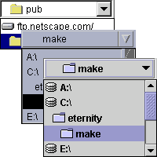

java.awt.Component
java.awt.Container
javax.swing.JComponent
javax.swing.JComboBox
cz.dhl.swing.JCoDirComboBox
java.awt.Component
java.awt.Container
javax.swing.JComponent
javax.swing.JComboBox
cz.dhl.swing.JCoDirComboBox
java.lang.Object
Swing Directory Selector Combo Box Component.

To listen for dir selection events:
dirChoice.setDirActionListener(new ActionListener()
{ public void actionPerformed(ActionEvent e)
{ myDirSelectHandler(); } } );
File,
Serialized Form| Nested Class Summary |
| Nested classes inherited from class javax.swing.JComboBox |
javax.swing.JComboBox.AccessibleJComboBox, javax.swing.JComboBox.KeySelectionManager |
| Nested classes inherited from class javax.swing.JComponent |
javax.swing.JComponent.AccessibleJComponent |
| Nested classes inherited from class java.awt.Container |
java.awt.Container.AccessibleAWTContainer |
| Nested classes inherited from class java.awt.Component |
java.awt.Component.AccessibleAWTComponent, java.awt.Component.BltBufferStrategy, java.awt.Component.FlipBufferStrategy |
| Field Summary |
| Fields inherited from class javax.swing.JComboBox |
actionCommand, dataModel, editor, isEditable, keySelectionManager, lightWeightPopupEnabled, maximumRowCount, renderer, selectedItemReminder |
| Fields inherited from class javax.swing.JComponent |
accessibleContext, listenerList, TOOL_TIP_TEXT_KEY, ui, UNDEFINED_CONDITION, WHEN_ANCESTOR_OF_FOCUSED_COMPONENT, WHEN_FOCUSED, WHEN_IN_FOCUSED_WINDOW |
| Fields inherited from class java.awt.Component |
BOTTOM_ALIGNMENT, CENTER_ALIGNMENT, LEFT_ALIGNMENT, RIGHT_ALIGNMENT, TOP_ALIGNMENT |
| Fields inherited from interface java.awt.image.ImageObserver |
ABORT, ALLBITS, ERROR, FRAMEBITS, HEIGHT, PROPERTIES, SOMEBITS, WIDTH |
| Constructor Summary | |
JCoDirComboBox()
|
|
| Method Summary | |
CoFile |
getDir()
Gets directory denoted by this component. |
CoFile |
getSelectedDir()
Gets directory denoted by (user) selection. |
void |
setDir(CoFile dir)
Sets directory to be denoted by this component. |
void |
setDirActionListener(java.awt.event.ActionListener listener)
Sets an ActionListener. |
| Methods inherited from class javax.swing.JComboBox |
actionPerformed, addActionListener, addItem, addItemListener, addPopupMenuListener, configureEditor, configurePropertiesFromAction, contentsChanged, createActionPropertyChangeListener, createDefaultKeySelectionManager, fireActionEvent, fireItemStateChanged, firePopupMenuCanceled, firePopupMenuWillBecomeInvisible, firePopupMenuWillBecomeVisible, getAccessibleContext, getAction, getActionCommand, getActionListeners, getEditor, getItemAt, getItemCount, getItemListeners, getKeySelectionManager, getMaximumRowCount, getModel, getPopupMenuListeners, getPrototypeDisplayValue, getRenderer, getSelectedIndex, getSelectedItem, getSelectedObjects, getUI, getUIClassID, hidePopup, insertItemAt, installAncestorListener, intervalAdded, intervalRemoved, isEditable, isLightWeightPopupEnabled, isPopupVisible, paramString, processKeyEvent, removeActionListener, removeAllItems, removeItem, removeItemAt, removeItemListener, removePopupMenuListener, selectedItemChanged, selectWithKeyChar, setAction, setActionCommand, setEditable, setEditor, setEnabled, setKeySelectionManager, setLightWeightPopupEnabled, setMaximumRowCount, setModel, setPopupVisible, setPrototypeDisplayValue, setRenderer, setSelectedIndex, setSelectedItem, setUI, showPopup, updateUI |
| Methods inherited from class javax.swing.JComponent |
addAncestorListener, addNotify, addPropertyChangeListener, addPropertyChangeListener, addVetoableChangeListener, computeVisibleRect, contains, createToolTip, disable, enable, firePropertyChange, firePropertyChange, firePropertyChange, firePropertyChange, firePropertyChange, firePropertyChange, firePropertyChange, firePropertyChange, firePropertyChange, fireVetoableChange, getActionForKeyStroke, getActionMap, getAlignmentX, getAlignmentY, getAncestorListeners, getAutoscrolls, getBorder, getBounds, getClientProperty, getComponentGraphics, getConditionForKeyStroke, getDebugGraphicsOptions, getDefaultLocale, getGraphics, getHeight, getInputMap, getInputMap, getInputVerifier, getInsets, getInsets, getListeners, getLocation, getMaximumSize, getMinimumSize, getNextFocusableComponent, getPreferredSize, getPropertyChangeListeners, getPropertyChangeListeners, getRegisteredKeyStrokes, getRootPane, getSize, getToolTipLocation, getToolTipText, getToolTipText, getTopLevelAncestor, getTransferHandler, getVerifyInputWhenFocusTarget, getVetoableChangeListeners, getVisibleRect, getWidth, getX, getY, grabFocus, isDoubleBuffered, isLightweightComponent, isManagingFocus, isMaximumSizeSet, isMinimumSizeSet, isOpaque, isOptimizedDrawingEnabled, isPaintingTile, isPreferredSizeSet, isRequestFocusEnabled, isValidateRoot, paint, paintBorder, paintComponent, paintChildren, paintImmediately, paintImmediately, print, printAll, printBorder, printComponent, printChildren, processComponentKeyEvent, processKeyBinding, processMouseMotionEvent, putClientProperty, registerKeyboardAction, registerKeyboardAction, removeAncestorListener, removeNotify, removePropertyChangeListener, removePropertyChangeListener, removeVetoableChangeListener, repaint, repaint, requestDefaultFocus, requestFocus, requestFocus, requestFocusInWindow, requestFocusInWindow, resetKeyboardActions, reshape, revalidate, scrollRectToVisible, setActionMap, setAlignmentX, setAlignmentY, setAutoscrolls, setBackground, setBorder, setDebugGraphicsOptions, setDefaultLocale, setDoubleBuffered, setFont, setForeground, setInputMap, setInputVerifier, setMaximumSize, setMinimumSize, setNextFocusableComponent, setOpaque, setPreferredSize, setRequestFocusEnabled, setToolTipText, setTransferHandler, setUI, setVerifyInputWhenFocusTarget, setVisible, unregisterKeyboardAction, update |
| Methods inherited from class java.awt.Container |
add, add, add, add, add, addContainerListener, addImpl, applyComponentOrientation, areFocusTraversalKeysSet, countComponents, deliverEvent, doLayout, findComponentAt, findComponentAt, getComponent, getComponentAt, getComponentAt, getComponentCount, getComponents, getContainerListeners, getFocusTraversalKeys, getFocusTraversalPolicy, getLayout, insets, invalidate, isAncestorOf, isFocusCycleRoot, isFocusCycleRoot, isFocusTraversalPolicySet, layout, list, list, locate, minimumSize, paintComponents, preferredSize, printComponents, processContainerEvent, processEvent, remove, remove, removeAll, removeContainerListener, setFocusCycleRoot, setFocusTraversalKeys, setFocusTraversalPolicy, setLayout, transferFocusBackward, transferFocusDownCycle, validate, validateTree |
| Methods inherited from class java.awt.Component |
action, add, addComponentListener, addFocusListener, addHierarchyBoundsListener, addHierarchyListener, addInputMethodListener, addKeyListener, addMouseListener, addMouseMotionListener, addMouseWheelListener, bounds, coalesceEvents, contains, createImage, createImage, createVolatileImage, createVolatileImage, disableEvents, dispatchEvent, enable, enableEvents, enableInputMethods, getBackground, getBounds, getColorModel, getComponentListeners, getComponentOrientation, getCursor, getDropTarget, getFocusCycleRootAncestor, getFocusListeners, getFocusTraversalKeysEnabled, getFont, getFontMetrics, getForeground, getGraphicsConfiguration, getHierarchyBoundsListeners, getHierarchyListeners, getIgnoreRepaint, getInputContext, getInputMethodListeners, getInputMethodRequests, getKeyListeners, getLocale, getLocation, getLocationOnScreen, getMouseListeners, getMouseMotionListeners, getMouseWheelListeners, getName, getParent, getPeer, getSize, getToolkit, getTreeLock, gotFocus, handleEvent, hasFocus, hide, checkImage, checkImage, imageUpdate, inside, isBackgroundSet, isCursorSet, isDisplayable, isEnabled, isFocusable, isFocusOwner, isFocusTraversable, isFontSet, isForegroundSet, isLightweight, isShowing, isValid, isVisible, keyDown, keyUp, list, list, list, location, lostFocus, mouseDown, mouseDrag, mouseEnter, mouseExit, mouseMove, mouseUp, move, nextFocus, paintAll, postEvent, prepareImage, prepareImage, processComponentEvent, processFocusEvent, processHierarchyBoundsEvent, processHierarchyEvent, processInputMethodEvent, processMouseEvent, processMouseWheelEvent, remove, removeComponentListener, removeFocusListener, removeHierarchyBoundsListener, removeHierarchyListener, removeInputMethodListener, removeKeyListener, removeMouseListener, removeMouseMotionListener, removeMouseWheelListener, repaint, repaint, repaint, resize, resize, setBounds, setBounds, setComponentOrientation, setCursor, setDropTarget, setFocusable, setFocusTraversalKeysEnabled, setIgnoreRepaint, setLocale, setLocation, setLocation, setName, setSize, setSize, show, show, size, toString, transferFocus, transferFocusUpCycle |
| Methods inherited from class java.lang.Object |
clone, equals, finalize, getClass, hashCode, notify, notifyAll, wait, wait, wait |
| Constructor Detail |
public JCoDirComboBox()
| Method Detail |
public CoFile getDir()
public CoFile getSelectedDir()
public void setDir(CoFile dir)
dir - to be denoted by component or nullpublic void setDirActionListener(java.awt.event.ActionListener listener)